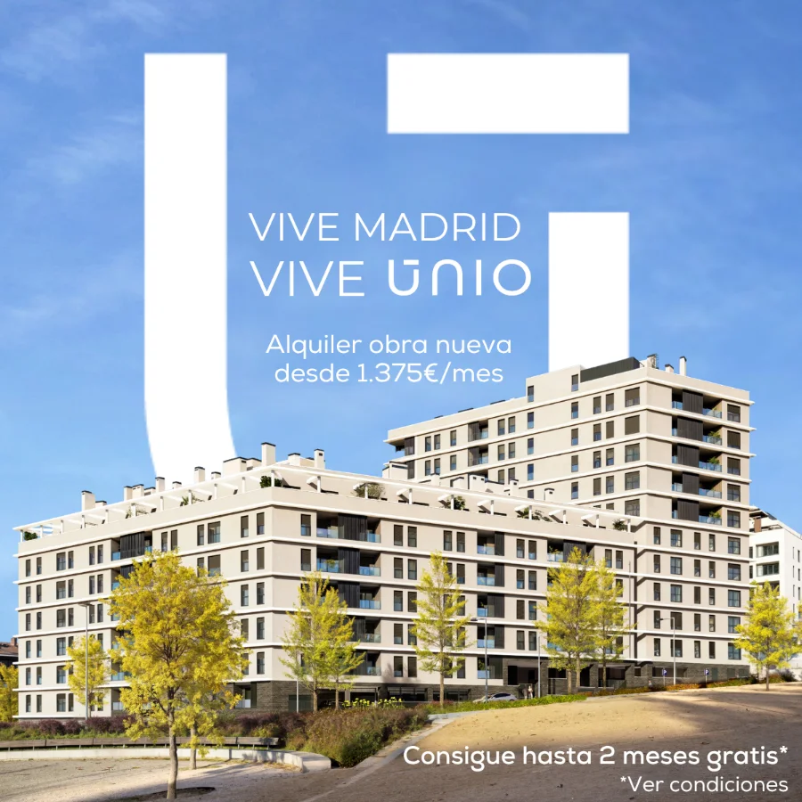
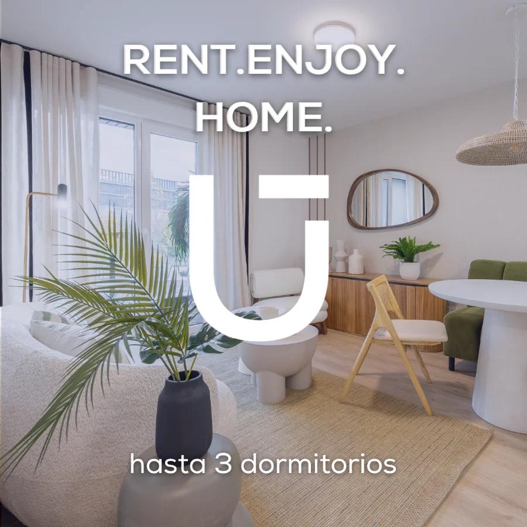
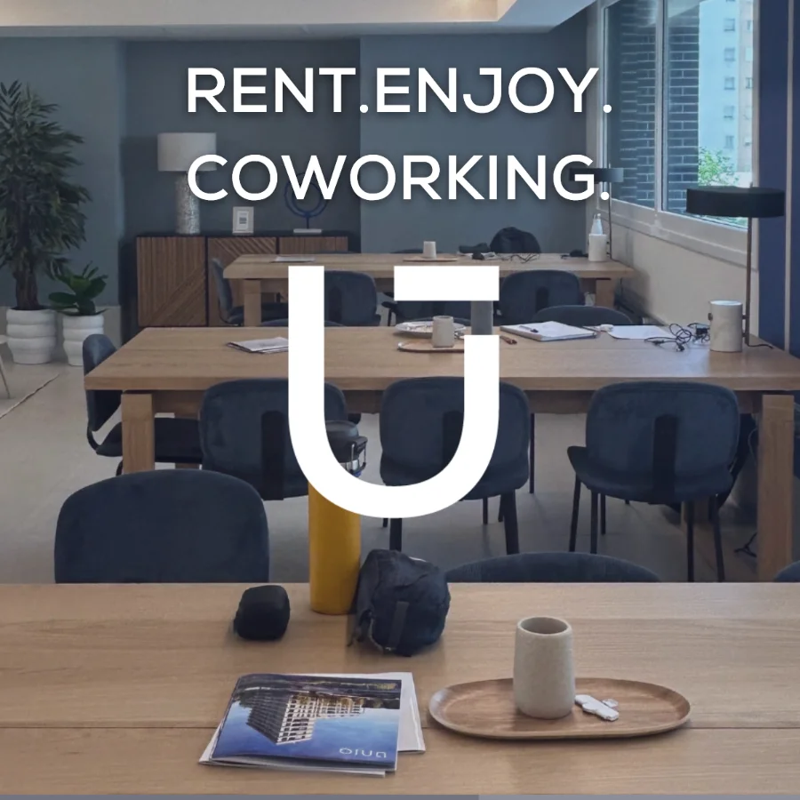
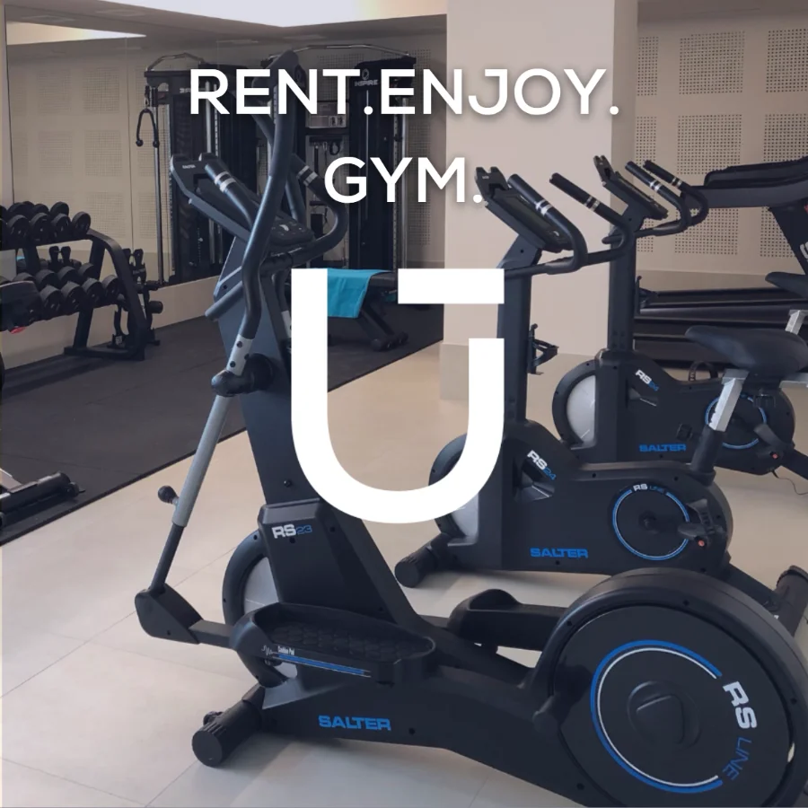
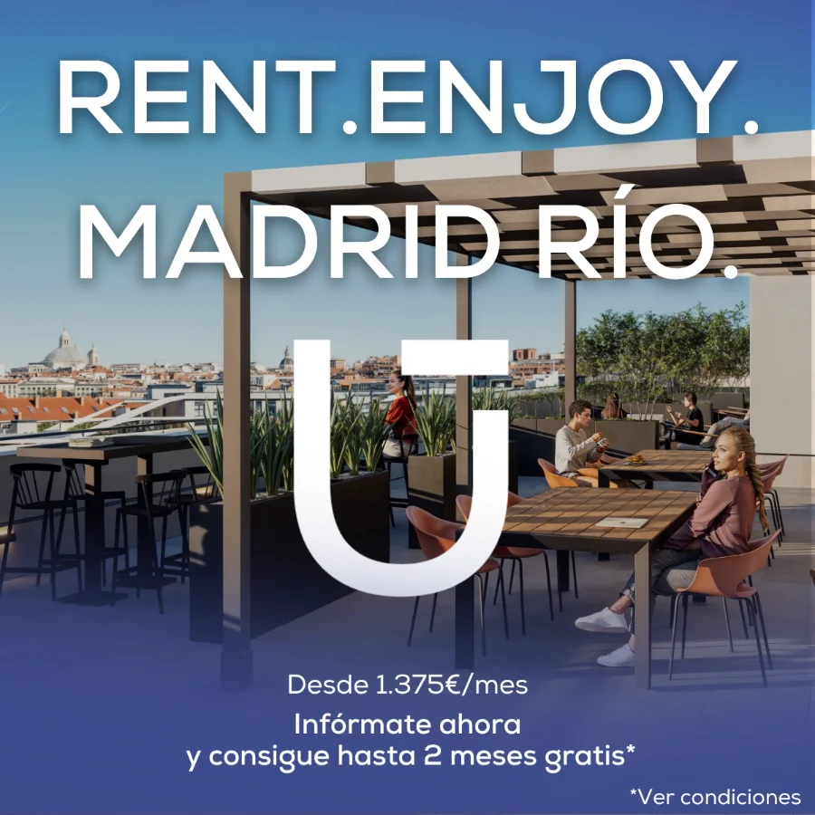
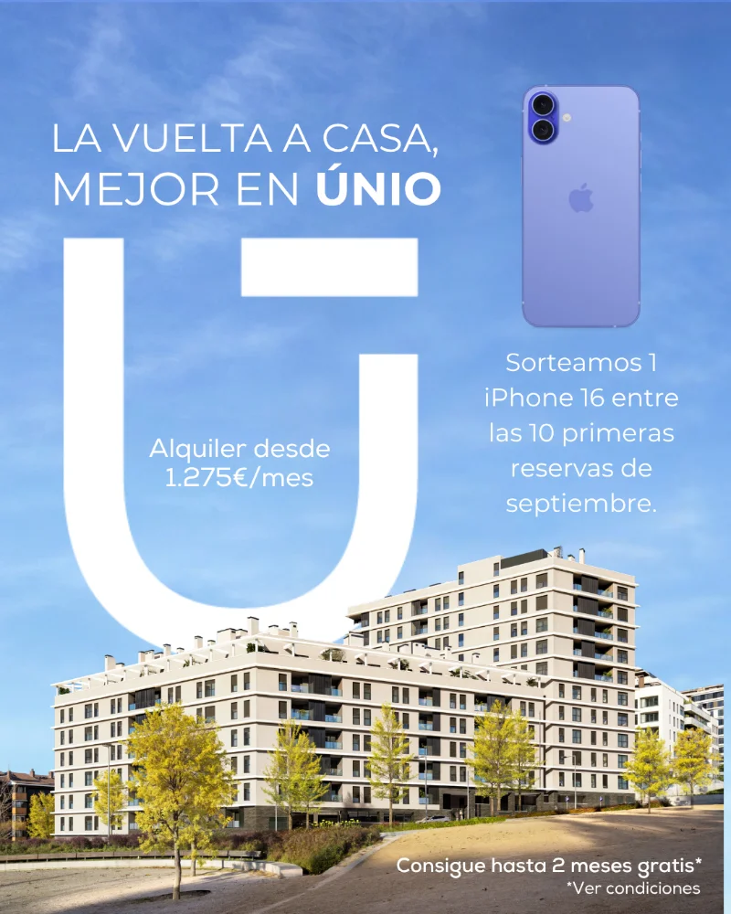
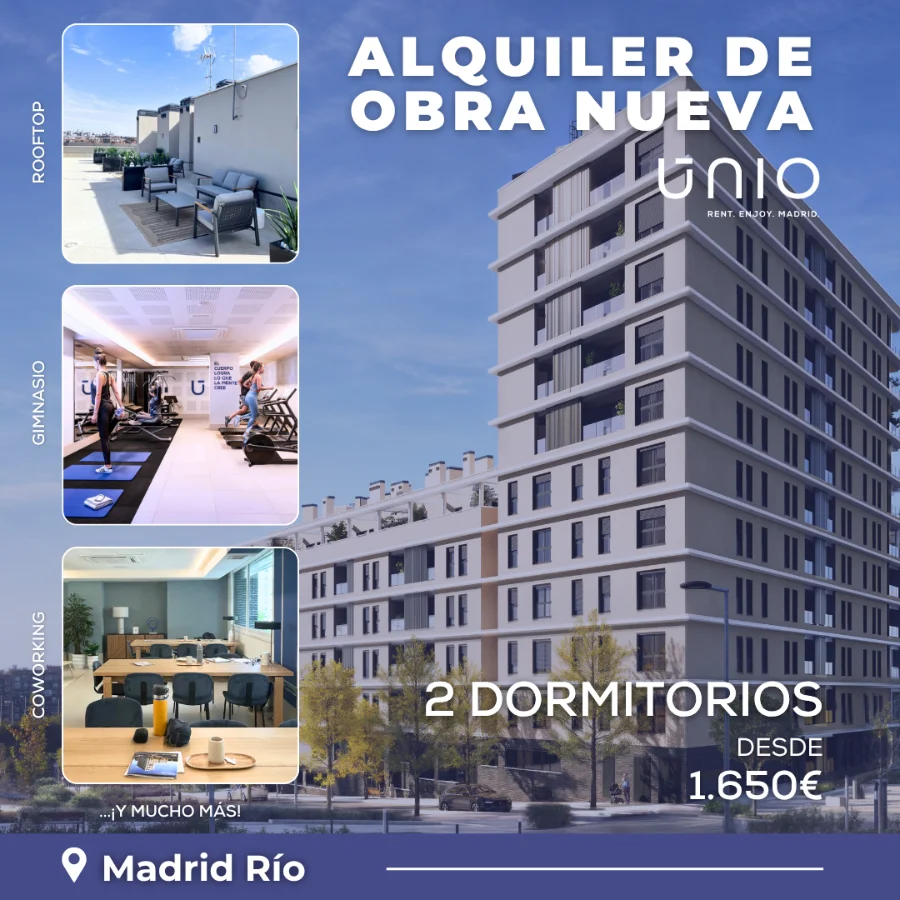
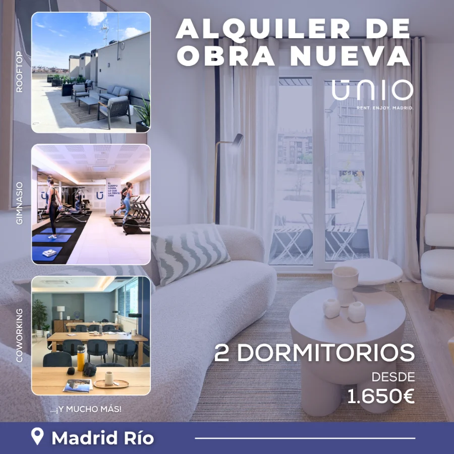
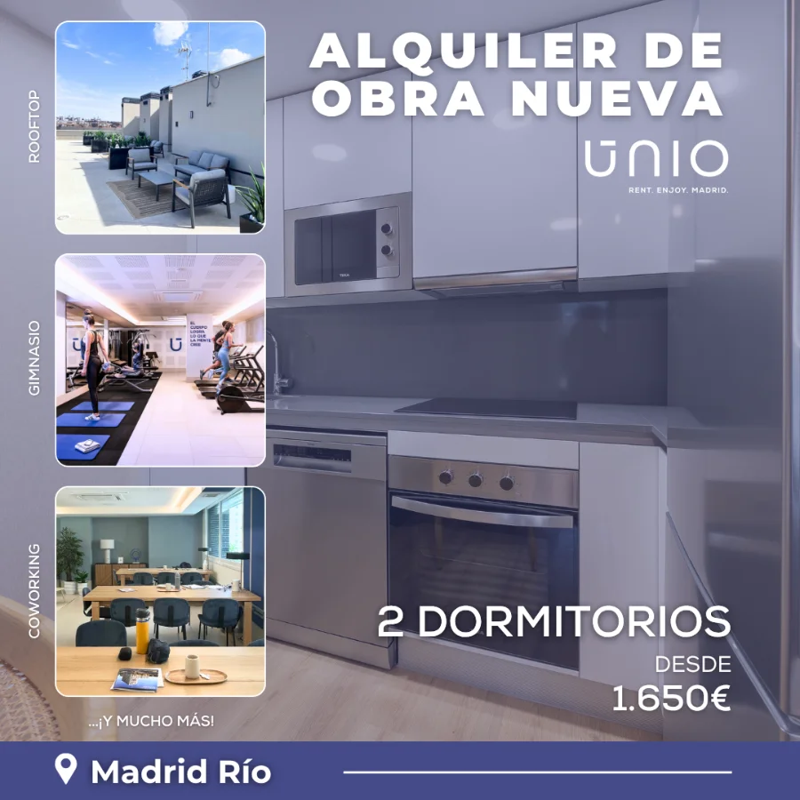
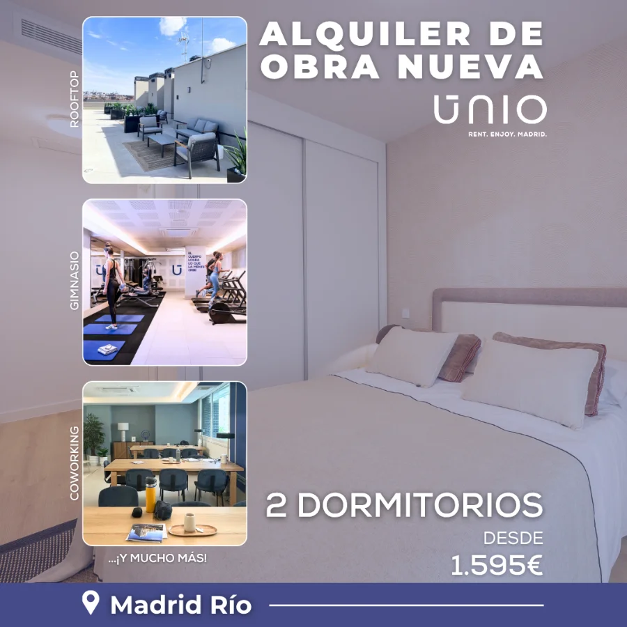

Únio Madrid
Campañas para Meta, Google Ads y prensa digital para un edificio de alquiler en Madrid Río.
Meta, Google Ads and online press campaigns for a rental building in Madrid Río.


- Sector
- Inmobiliario · alquiler de obra nuevaReal estate · new-build rental
- UbicaciónLocation
- Madrid Río, Madrid
- AñoYear
- 2025–26
- Mi rolMy role
- Diseño de las creatividades de campaña para Meta, Google Ads y prensa digital.Design of the campaign creatives for Meta, Google Ads and online press.
- EntregablesDeliverables
- Anuncios 1:1 y 4:5 para Meta, una pieza por vivienda y formatos de display1:1 and 4:5 Meta ads, one ad per home and display formats
01El retoThe challenge
Alquilar las viviendas de Únio, un edificio de obra nueva en Madrid Río, con campañas que cambiaban de gancho cada mes: meses gratis, plan amigo o el sorteo de un iPhone 16 entre las primeras reservas.Rent out the homes at Únio, a new-build in Madrid Río, with campaigns whose hook changed every month: free months, a refer-a-friend plan or an iPhone 16 draw among the first bookings.
02ProcesoProcess
- La U como ventanaThe U as a window
La U del logotipo enmarca la foto de cada pieza: el edificio, el gimnasio, el coworking o Madrid Río.The U from the logo frames the photo in every piece: the building, the gym, the coworking space or Madrid Río.
- Un lema fijo, un espacio por piezaOne fixed line, one space per piece
“Rent. Enjoy.” se repite y lo que cambia es lo que se disfruta: Home, Coworking, Gym, Madrid Río.“Rent. Enjoy.” repeats; what changes is what you enjoy: Home, Coworking, Gym, Madrid Río.
- Una pieza por viviendaOne ad per home
Anuncios con las fotos, los dormitorios y el precio de cada vivienda disponible.Ads showing the photos, bedrooms and price of each available home.
03SoluciónSolution
Piezas cuadradas y verticales para Meta, una serie por vivienda y formatos de display para Google Ads y El Confidencial.Square and vertical pieces for Meta, a per-home series and display formats for Google Ads and El Confidencial.










04EntregablesDeliverables
Todos los formatos estáticos para Meta y Google Ads, y vídeos.All static formats for Meta and Google Ads, and videos.